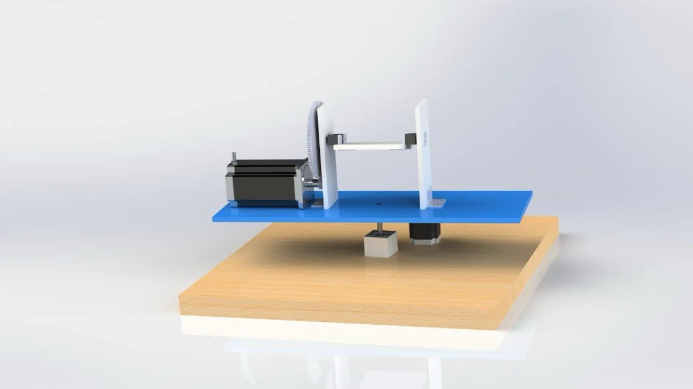
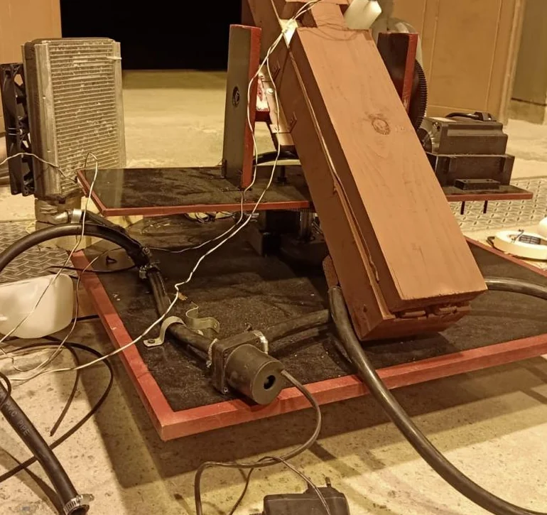
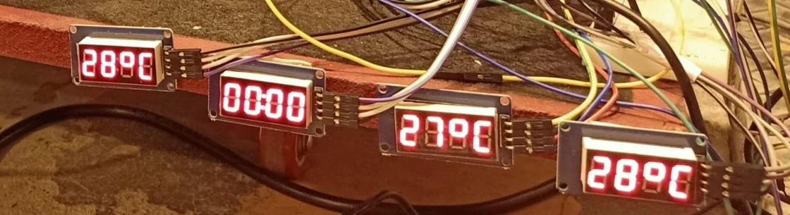

NUST mechanical engineering capstone · 2023
Motorized test platform
Our team developed a pitch-and-yaw test platform for an electromagnetic propulsion research prototype. My work covered the SolidWorks assembly, stepper-motor mounts, and copper-rail cooling integration. I also helped assemble and test the prototype.

SolidWorks · Mechanical assembly
From CAD to the bench

Pitch and yaw positioning
The platform uses a rotating deck for yaw and a pivot between two uprights for pitch. I modelled the assembly and stepper-motor mounts in SolidWorks and used a motion study to review the arrangement before the build.
During assembly and testing, the team integrated the motion hardware, cooling hoses, and instrumentation on the same rig.
Bench testing · Prototype footage
Platform motion test
Two clips from the lab show the support tilting in pitch, followed by the deck rotating in yaw. The footage records the positioning mechanism in motion.
Thermal management · Cooling and instrumentation
Copper-rail cooling
I worked on a custom heat exchanger for the copper rails and used ANSYS thermal and flow simulations to evaluate the cooling design. The team integrated the cooling hardware and temperature displays on the prototype.

